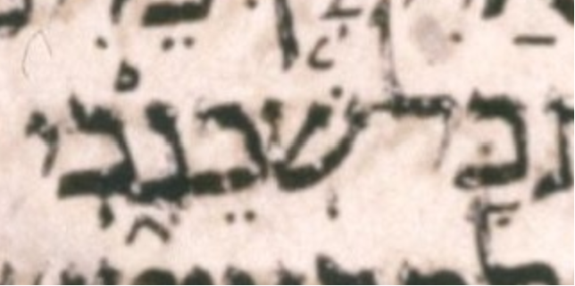

| n | 34 |
| citation:book | 2Kings |
| citation:c | 4 |
| citation:v | 3 |
| citation:position | 10 |
| author:name | Ben Denckla |
| author:mail | bdenckla@alum.mit.edu |
| author:confirmed | true |
| description | Note that while creating the pointed qere, the transcriber added a sheva to kaf sofit |
| lc:folio | Folio_204A |
| lc:column | 3 |
| lc:line | 20 |
| lc:credit | Credit: Sefaria.org. |
| reftext | שְׁכֵנָ֑יִךְ |
| refuni | shin shin-dot sheva kaf tsere nun qamats etnahta yod hiriq final-kaf sheva |
| changetext | שְׁכֵנָ֑יִךְ |
| changeuni | shin shin-dot sheva kaf tsere nun qamats etnahta yod hiriq final-kaf sheva |
| notes:note | The qere at issue is part of the compound כָּל־שְׁכֵנָ֑יִךְ. The other parts of this compound are not part of this qere. |
| notes:note-2 | The manuscript’s pointed ketiv (MPK) is שְׁכֵנָ֑כִי. |
| notes:note-3 | The MPK’s yod does not carry a sheva for the qere’s ך, perhaps because that would be illegal. |
| transnotes:transnote:action | Add |
| transnotes:transnote:type | a |
| transnotes:transnote:beforetext | XXX fill me in beforetext |
| status | Pending |
| type | NoTextChange |